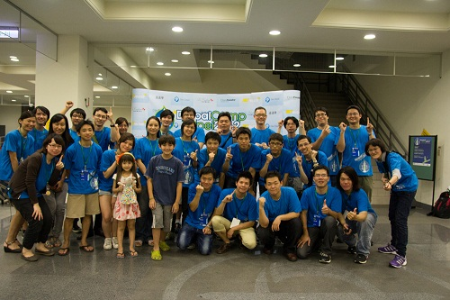
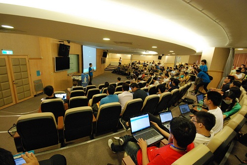

Drupal 2012 高雄研討會：從網站開發到資料管理


Drupal 在台灣已經進入第 6 個年頭了，今年 7 月因為眾人的努力，也成功盛大的舉辦了 DrupalCamp Taipei 2012，當時在眾人的討論之下，為了讓中南部的網站相關開發人士也可以一起來體驗這套方便、強大的開源軟體，DrupalTaiwan 決定將於 2012 年 11 月 17 日星期六在高雄舉行小型研討會，把北部的這份感動也一起帶下去。

▲ 圖 1：DrupalCamp Taipei 2012 辛苦的工作人員
這次活動特別找來了兩位在 Drupal 使用上有多年經驗的講師，跟大家分享 Drupal 經驗上的點點滴滴，當天更安排了幾位 Drupal 的前輩在台上為大家解惑，不論是使用上、開發上甚至是選擇分析上有任何問題，都將會一一的為各位解說。

▲ 圖 2：DrupalCamp Taipei 2012 活動狀況
活動請從此報名：https://www.accupass.com/go/drupal
關於Drupal
Drupal 是一套開源軟體，從西元 2000 年開始發展至今，已經有 228 個國家、82 萬多人在使用，可使用 1 萬 8 千多種功能、1 千多種佈景主題，最重要的是全球有 2 萬 1 千多位開發者在共同維護這套系統。國際上知名的案例更有美國白宮（https://www.whitehouse.gov/）、華納唱片（https://www.warnerbrosrecords.com/）、賽門鐵克社群（https://www.symantec.com/connect/）等等。
活動資訊日期：2012 年 11 月 17 日 星期六
時間：13:00 ~ 17:00
報名網址：https://www.accupass.com/go/drupal
專題演講：
13:50 ~ 14:30 專題演講 I - 善用 Drupal 啟動你的精實創業 (Joshra)
15:00 ~ 15:40 專題演講 II - 為客戶打造專屬網站管理介面 (Bobju)
地點：高雄樹德科技大學推廣教育中心 (中正分部)
地址：802 高雄市苓雅區中正二路 30 號 8 樓
捷運：高雄捷運橘線文化中心站 (O7) 四號出口